Caracterización y auditoría de calidad de datos para predecir la fuga (churn) y el valor del cliente (CLV) en una fintech colombiana#
Martínez Pulido, Valerie · Basto Martínez, Abrahan · Esguerra Fernández, Rubén
Universidad del Norte — Machine Learning
Entrega 1: Análisis Exploratorio de Datos (EDA) · Agosto de 2026
Resumen#
La predicción de la fuga de clientes (churn) y del valor del cliente (customer lifetime value, CLV) es central para los servicios financieros minoristas, y su automatización suele apoyarse en modelos de aprendizaje supervisado cuyo desempeño depende críticamente de la calidad de los datos de entrada. En este trabajo se presenta la fase de comprensión y auditoría de datos de un proyecto de modelado sobre un conjunto de datos público de una empresa fintech colombiana (2023) compuesto por 48.723 clientes descritos con 54 variables y 3.159.157 transacciones. Mediante un análisis exploratorio exhaustivo se caracterizan las variables demográficas, de productos, de engagement, de satisfacción y las dos variables objetivo, y se realiza una auditoría de calidad que revela tres problemas con impacto directo en el modelado: (i) la etiqueta churn_probability está casi determinada por el número de productos activos (r = −0,876; R² = 0,767) y acotada al rango 0,11–0,50, lo que sugiere una posible fuga de información; (ii) varias columnas de transacciones son duplicados desalineados (100 % de valores idénticos pero 0 % de coincidencia por fila), de los cuales solo tx_count, total_tx_volume y avg_tx_value coinciden con las transacciones reales; y (iii) los valores faltantes son estructurales (“no aplica”) y no aleatorios. Como consecuencia directa se define un conjunto depurado para el modelado (df_modelo) y un plan de preprocesamiento —eliminación de duplicados, banderas has_*, transformación logarítmica de variables monetarias y codificación de categóricas— que constituye la base para la fase posterior de clasificación de fuga y regresión de CLV.
Palabras clave: análisis exploratorio de datos, calidad de datos, fuga de clientes (churn), valor del cliente (CLV), fuga de información (data leakage), banca minorista.
1. Introducción#
La retención de clientes y la estimación de su valor son problemas centrales en la banca minorista y en el sector fintech: adquirir un cliente nuevo cuesta varias veces más que retener a uno existente, y no todos los clientes aportan el mismo valor a lo largo de su relación con la entidad. Anticipar qué clientes tienen mayor probabilidad de fuga (churn) y cuánto valor generarán (customer lifetime value, CLV) permite priorizar acciones comerciales y de fidelización, y por eso ambos problemas se abordan de forma habitual con técnicas de aprendizaje automático.
El enfoque estándar es el aprendizaje supervisado: modelos de clasificación para la fuga y de regresión para el valor, entrenados sobre variables de comportamiento, demografía y actividad transaccional. Los modelos estudiados en el curso van desde alternativas lineales (regresión logística y lineal) hasta métodos de ensamble como Random Forest y XGBoost, ampliamente usados por su robustez frente a datos tabulares heterogéneos. El desempeño de todos ellos, sin embargo, está condicionado por un factor previo al algoritmo: la calidad de los datos de entrada.
Una limitación frecuente —y a menudo subestimada— es la fuga de información (data leakage) y la presencia de variables redundantes o corruptas. Cuando una variable predictora codifica, directa o indirectamente, la propia etiqueta, las métricas de validación se inflan de forma artificial y el modelo no generaliza a datos nuevos. De igual manera, columnas duplicadas o desalineadas y un tratamiento incorrecto de los valores faltantes introducen ruido y multicolinealidad evitables. Auditar estos aspectos antes de modelar es, por tanto, tan importante como la elección del algoritmo.
En este trabajo se aborda la fase de comprensión y preparación de datos de un proyecto de modelado sobre un conjunto público de una empresa fintech colombiana (2023) con 48.723 clientes (54 variables) y 3.159.157 transacciones, cuyas variables objetivo son la probabilidad de fuga (churn_probability) y el valor del cliente (customer_lifetime_value / clv_segment). El objetivo es caracterizar el conjunto mediante un análisis exploratorio exhaustivo y auditar su calidad para definir un preprocesamiento riguroso y reproducible.
La contribución principal es la identificación de tres problemas de calidad con impacto directo en el modelado —una posible fuga en la etiqueta de fuga, columnas de transacciones duplicadas y desalineadas, y faltantes estructurales— y la definición, como consecuencia directa, de un conjunto de datos depurado y un plan de preprocesamiento. En este trabajo sostenemos que, sin esta auditoría previa, un modelo entrenado sobre los datos crudos obtendría un desempeño engañosamente alto —por la relación casi determinista entre la fuga y el número de productos activos— y arrastraría redundancia y ruido evitables; y mostramos, con evidencia cuantitativa del EDA, las correcciones necesarias antes de la fase de modelado de clasificación y regresión.
2. Metodología#
2.1 Descripción del problema y del conjunto de datos#
(1) Descripción general#
El conjunto de datos es COFINFAD: Colombian Fintech Financial Analytics Dataset, publicado de forma abierta en Mendeley Data (DOI: 10.17632/mhb4zn3258.1, licencia CC BY 4.0). Corresponde a clientes de una empresa fintech colombiana (2023) y se compone de dos archivos: customer_data.csv, con un registro por cliente (48.723 clientes × 54 variables: perfil demográfico, tenencia de productos, engagement digital, satisfacción/NPS, resúmenes transaccionales y las variables objetivo), y transactions_data.csv, con 3.159.157 transacciones individuales (customer_id, date, amount, type). Se consideran dos variables objetivo: churn_probability (fuga; regresión o, binarizada, clasificación) y customer_lifetime_value / clv_segment (valor del cliente; regresión o clasificación ordinal). Todos los clientes tienen actividad transaccional. El balance de clases de clv_segment está encabezado por el nivel Bronze, y churn_probability se distribuye de forma acotada (0,11–0,50); ambos aspectos se documentan en el EDA.
(2) ETL (Extract, Transform, Load)#
Extract. Los datos se obtienen de dos archivos CSV ubicados en la carpeta del proyecto; transactions_data.csv se carga interpretando date como fecha.
Transform. A partir de los hallazgos del EDA (desarrollo técnico, más abajo) se define la limpieza:
Duplicados / redundancia: no hay filas ni
customer_idduplicados; sí se detectan columnas de transacciones duplicadas y desalineadas (average_transaction_value,total_transaction_volume,avg_daily_transactions), que se eliminan conservando sus gemelas confiables (avg_tx_value,total_tx_volume,transaction_frequency).Faltantes: son estructurales (significan “no aplica” en
complaint_topics,feature_requests,credit_utilization_ratio); se codifican como banderas binariashas_*y se imputa con criterio (0 en utilización de crédito solo si el cliente tiene tarjeta), en lugar de imputar promedios.Outliers y asimetría: las variables monetarias (
customer_lifetime_value,total_tx_volume,avg_tx_value) están muy sesgadas; se prevé transformación logarítmica en vez de eliminar filas. Se revisan los clientes conCLV = 0.Codificación: categóricas mediante one-hot / ordinal; agrupación de las de alta cardinalidad (
occupation,location).
Load. El resultado es un conjunto depurado, df_modelo (48.723 × 54 tras eliminar los duplicados y añadir las banderas), listo para el modelado. Para la fase posterior se prevé una partición estratificada train/test con semilla fija (p. ej. seed=42) para garantizar reproducibilidad.
(3) EDA exhaustivo#
El análisis exploratorio exhaustivo —estadística descriptiva, análisis univariado y bivariado, matriz de correlación, detección de outliers, balance de la variable objetivo y figuras de apoyo— se desarrolla con código, tablas y figuras reproducibles en las secciones técnicas de este cuaderno (a continuación). Sus principales hallazgos, y las decisiones de preprocesamiento que se derivan como consecuencia directa de ellos, se resumen en las conclusiones del EDA (sección 10 del desarrollo técnico).
Desarrollo técnico del EDA (código y resultados reproducibles)#
Las secciones siguientes desarrollan el análisis exploratorio completo, con su código, tablas y figuras. Requisitos: pandas, numpy, matplotlib, seaborn, scipy.
1. Configuración del entorno#
import numpy as np
import pandas as pd
import matplotlib.pyplot as plt
import matplotlib.ticker as mticker
import seaborn as sns
import warnings, os
warnings.filterwarnings('ignore')
%matplotlib inline
# Paleta azul monocromatica usada en todas las graficas
AZUL = '#1f3a5f'
PAL = ['#1f3a5f', '#2e5a8f', '#3d78bf', '#5a91d0', '#7fb0e0', '#a8cbec', '#4a6fa5', '#6d9bd1']
sns.set_theme(style='whitegrid')
sns.set_palette(sns.color_palette(PAL))
plt.rcParams['figure.dpi'] = 110
plt.rcParams['axes.titleweight'] = 'bold'
plt.rcParams['axes.prop_cycle'] = plt.cycler(color=PAL)
plt.rcParams['patch.facecolor'] = AZUL
pd.set_option('display.max_columns', 60)
pd.set_option('display.width', 150)
pd.set_option('display.float_format', lambda v: f'{v:,.2f}')
def fmt_grande(x, pos=None):
# Abrevia montos (COP) como K / M / B
ax = abs(x)
if ax >= 1e9: return f'{x/1e9:.1f}B'
if ax >= 1e6: return f'{x/1e6:.1f}M'
if ax >= 1e3: return f'{x/1e3:.0f}K'
return f'{x:.0f}'
FMT = mticker.FuncFormatter(fmt_grande)
print('Librerias cargadas. Paleta: AZUL monocromatico.')
Librerias cargadas. Paleta: AZUL monocromatico.
from scipy import stats
def cramers_v(x, y):
# Asociacion entre dos categoricas (0 = independientes, 1 = una predice la otra)
t = pd.crosstab(x, y)
if t.shape[0] < 2 or t.shape[1] < 2:
return np.nan
chi2 = stats.chi2_contingency(t)[0]
n = t.values.sum()
phi2 = chi2 / n
r, k = t.shape
phi2c = max(0, phi2 - (k - 1) * (r - 1) / (n - 1))
rc = r - (r - 1) ** 2 / (n - 1)
kc = k - (k - 1) ** 2 / (n - 1)
denom = min(kc - 1, rc - 1)
return np.sqrt(phi2c / denom) if denom > 0 else np.nan
def eta2(cat, num):
# Tamano de efecto de una categorica sobre una numerica (0 = nada, 1 = todo)
d = pd.DataFrame({'c': cat, 'y': num}).dropna()
if d['c'].nunique() < 2:
return np.nan
gm = d['y'].mean()
ss_total = ((d['y'] - gm) ** 2).sum()
ss_between = d.groupby('c')['y'].apply(lambda g: len(g) * (g.mean() - gm) ** 2).sum()
return ss_between / ss_total if ss_total > 0 else np.nan
def outliers_iqr(s):
s = s.dropna()
q1, q3 = s.quantile(.25), s.quantile(.75)
iqr = q3 - q1
lo, hi = q1 - 1.5 * iqr, q3 + 1.5 * iqr
mask = (s < lo) | (s > hi)
return int(mask.sum()), round(mask.mean() * 100, 1), lo, hi
print('Funciones auxiliares cargadas.')
Funciones auxiliares cargadas.
2. Carga de los datos#
Lectura defensiva: si transactions_data.csv no está, el notebook corre igual y omite esa sección.
# Los archivos CSV estan en la misma carpeta que este notebook.
df = pd.read_csv('customer_data.csv')
tx = pd.read_csv('transactions_data.csv', parse_dates=['date'])
print(f'customer_data.csv -> {df.shape[0]:,} filas x {df.shape[1]} columnas')
print(f'transactions_data.csv -> {tx.shape[0]:,} filas x {tx.shape[1]} columnas')
customer_data.csv -> 48,723 filas x 54 columnas
transactions_data.csv -> 3,159,157 filas x 4 columnas
3. Visión general de la tabla de clientes#
Clasificamos las columnas por tipo y miramos primeras filas y estadísticos.
col_bool = [c for c in df.columns if df[c].dtype == bool]
col_num = [c for c in df.select_dtypes(include=[np.number]).columns if c != 'customer_id']
col_fecha = [c for c in df.columns if 'date' in c or c in ('first_tx', 'last_tx')]
_excl = set(col_bool) | set(col_num) | set(col_fecha) | {'customer_id'}
col_cat = [c for c in df.columns if c not in _excl] # texto: dtype object/str/string
print(f'Numericas : {len(col_num)}')
print(f'Categoricas: {len(col_cat)}')
print(f'Booleanas : {len(col_bool)}')
print(f'Fechas : {len(col_fecha)} -> {col_fecha}')
df.head()
Numericas : 28
Categoricas: 13
Booleanas : 7
Fechas : 5 -> ['first_tx', 'last_tx', 'last_survey_date', 'last_transaction_date', 'first_transaction_date']
| customer_id | age | gender | location | income_bracket | occupation | education_level | marital_status | household_size | acquisition_channel | customer_segment | savings_account | credit_card | personal_loan | investment_account | insurance_product | active_products | app_logins_frequency | feature_usage_diversity | bill_payment_user | auto_savings_enabled | credit_utilization_ratio | international_transactions | failed_transactions | tx_count | avg_tx_value | total_tx_volume | first_tx | last_tx | base_satisfaction | tx_satisfaction | product_satisfaction | satisfaction_score | nps_score | last_survey_date | support_tickets_count | resolved_tickets_ratio | app_store_rating | feedback_sentiment | feature_requests | complaint_topics | clv_segment | monthly_transaction_count | average_transaction_value | total_transaction_volume | transaction_frequency | last_transaction_date | preferred_transaction_type | first_transaction_date | weekend_transaction_ratio | avg_daily_transactions | customer_tenure | churn_probability | customer_lifetime_value | |
|---|---|---|---|---|---|---|---|---|---|---|---|---|---|---|---|---|---|---|---|---|---|---|---|---|---|---|---|---|---|---|---|---|---|---|---|---|---|---|---|---|---|---|---|---|---|---|---|---|---|---|---|---|---|---|
| 0 | 93716481 | 44 | Male | Pereira, Risaralda | Very High | Engineer | Master | Married | 5 | Partnership | occasional | True | True | False | False | True | 1 | 15 | 3 | False | False | 0.18 | 1 | 0 | 76 | 1,679,872.37 | 127670300 | 2023-01-05 | 2023-12-25 | 9.21 | 0.38 | 0.60 | 5 | -7 | 2023-12-16 | 1 | 0.00 | 3.50 | Neutral | Budgeting tools | NaN | Gold | 1.43 | 6,054,025.00 | 60540250 | 0.03 | 2023-12-05 | Transfer | 2023-01-05 | 0.30 | 0.03 | 11.63 | 0.36 | 312,414,808.03 |
| 1 | 49020929 | 44 | Male | Cali, Valle del Cauca | Medium | Construction Worker | Bachelor | Married | 2 | Paid Ad | regular | True | False | False | False | False | 5 | 30 | 0 | True | False | NaN | 1 | 0 | 10 | 5,445,810.00 | 54458100 | 2023-02-05 | 2023-12-20 | 6.07 | 0.05 | 0.20 | 3 | -46 | 2023-05-05 | 1 | 1.00 | 4.00 | Positive | NaN | NaN | Bronze | 1.57 | 2,127,413.64 | 23401550 | 0.03 | 2023-12-18 | Transfer | 2023-02-05 | 0.18 | 0.03 | 11.50 | 0.18 | 167,022,286.14 |
| 2 | 52690950 | 45 | Male | Barranquilla, Atlántico | High | Construction Worker | Bachelor | Married | 4 | Paid Ad | inactive | True | False | False | True | True | 3 | 4 | 4 | True | False | NaN | 1 | 0 | 10 | 640,335.00 | 6403350 | 2023-01-31 | 2023-12-12 | 8.20 | 0.05 | 0.60 | 4 | -29 | 2023-11-16 | 0 | 0.00 | 5.00 | Positive | NaN | NaN | Gold | 2.50 | 3,575,915.00 | 35759150 | 0.05 | 2023-10-27 | Transfer | 2023-01-31 | 0.30 | 0.05 | 8.77 | 0.32 | 19,403,710.87 |
| 3 | 23199751 | 45 | Male | Bogotá, Cundinamarca | High | Electrician | High School | Single | 2 | Referral | inactive | True | False | False | True | False | 2 | 15 | 4 | True | False | NaN | 1 | 1 | 23 | 660,180.43 | 15184150 | 2023-01-10 | 2023-12-24 | 7.53 | 0.12 | 0.40 | 4 | -31 | 2023-05-07 | 2 | 0.50 | 4.50 | Positive | Cryptocurrency trading, Budgeting tools | NaN | Bronze | 1.56 | 1,513,353.57 | 21186950 | 0.05 | 2023-11-30 | Transfer | 2023-01-10 | 0.14 | 0.05 | 10.73 | 0.34 | 35,978,105.09 |
| 4 | 61997066 | 44 | Female | Bogotá, Cundinamarca | Medium | Cleaner | Bachelor | Married | 3 | Paid Ad | power | True | True | False | False | False | 1 | 19 | 1 | False | False | 0.40 | 0 | 0 | 18 | 14,574,469.44 | 262340450 | 2023-01-05 | 2023-11-27 | 6.61 | 0.09 | 0.40 | 3 | -47 | 2023-09-15 | 2 | 1.00 | 4.00 | Positive | International transfers | App performance | Gold | 2.11 | 612,673.68 | 11640800 | 0.06 | 2023-11-17 | Payment | 2023-01-05 | 0.32 | 0.06 | 11.63 | 0.40 | 304,661,996.60 |
# Estadisticos descriptivos de las variables numericas
df[col_num].describe().T
| count | mean | std | min | 25% | 50% | 75% | max | |
|---|---|---|---|---|---|---|---|---|
| age | 48,723.00 | 44.54 | 12.28 | 29.00 | 30.00 | 45.00 | 59.00 | 60.00 |
| household_size | 48,723.00 | 3.50 | 1.58 | 1.00 | 2.00 | 3.00 | 4.00 | 13.00 |
| active_products | 48,723.00 | 2.10 | 1.18 | 1.00 | 1.00 | 2.00 | 3.00 | 5.00 |
| app_logins_frequency | 48,723.00 | 22.38 | 11.75 | 4.00 | 15.00 | 22.00 | 30.00 | 100.00 |
| feature_usage_diversity | 48,723.00 | 2.37 | 1.74 | 0.00 | 1.00 | 2.00 | 4.00 | 10.00 |
| credit_utilization_ratio | 30,460.00 | 0.29 | 0.16 | 0.00 | 0.16 | 0.27 | 0.39 | 0.94 |
| international_transactions | 48,723.00 | 0.49 | 0.70 | 0.00 | 0.00 | 0.00 | 1.00 | 6.00 |
| failed_transactions | 48,723.00 | 0.20 | 0.44 | 0.00 | 0.00 | 0.00 | 0.00 | 4.00 |
| tx_count | 48,723.00 | 64.84 | 611.93 | 10.00 | 12.00 | 18.00 | 35.00 | 77,465.00 |
| avg_tx_value | 48,723.00 | 3,564,851.69 | 3,959,442.83 | 318,215.00 | 1,339,114.49 | 1,763,107.41 | 4,658,536.36 | 51,670,302.78 |
| total_tx_volume | 48,723.00 | 257,472,847.91 | 6,211,110,383.73 | 3,182,150.00 | 20,158,450.00 | 48,081,150.00 | 120,445,000.00 | 1,073,087,373,150.00 |
| base_satisfaction | 48,723.00 | 8.00 | 1.00 | 4.25 | 7.33 | 8.01 | 8.68 | 11.94 |
| tx_satisfaction | 48,723.00 | 0.18 | 0.22 | 0.05 | 0.06 | 0.09 | 0.17 | 1.00 |
| product_satisfaction | 48,723.00 | 0.47 | 0.23 | 0.00 | 0.40 | 0.40 | 0.60 | 1.00 |
| satisfaction_score | 48,723.00 | 4.16 | 0.58 | 2.00 | 4.00 | 4.00 | 5.00 | 6.00 |
| nps_score | 48,723.00 | -26.76 | 12.56 | -80.00 | -34.00 | -28.00 | -19.00 | 23.00 |
| support_tickets_count | 48,723.00 | 1.00 | 1.00 | 0.00 | 0.00 | 1.00 | 2.00 | 7.00 |
| resolved_tickets_ratio | 48,723.00 | 0.51 | 0.48 | 0.00 | 0.00 | 0.50 | 1.00 | 1.00 |
| app_store_rating | 48,723.00 | 4.16 | 0.59 | 2.00 | 4.00 | 4.00 | 4.50 | 5.00 |
| monthly_transaction_count | 48,723.00 | 5.77 | 50.97 | 1.00 | 1.60 | 2.00 | 3.09 | 6,455.42 |
| average_transaction_value | 48,723.00 | 3,564,851.69 | 3,959,442.83 | 318,215.00 | 1,339,114.49 | 1,763,107.41 | 4,658,536.36 | 51,670,302.78 |
| total_transaction_volume | 48,723.00 | 257,472,847.91 | 6,211,110,383.73 | 3,182,150.00 | 20,158,450.00 | 48,081,150.00 | 120,445,000.00 | 1,073,087,373,150.00 |
| transaction_frequency | 48,723.00 | 0.19 | 1.70 | 0.03 | 0.04 | 0.06 | 0.10 | 215.78 |
| weekend_transaction_ratio | 48,723.00 | 0.28 | 0.10 | 0.00 | 0.21 | 0.28 | 0.34 | 0.91 |
| avg_daily_transactions | 48,723.00 | 0.19 | 1.70 | 0.03 | 0.04 | 0.06 | 0.10 | 215.78 |
| customer_tenure | 48,723.00 | 11.37 | 0.72 | 4.70 | 11.17 | 11.63 | 11.87 | 11.97 |
| churn_probability | 48,723.00 | 0.34 | 0.07 | 0.11 | 0.30 | 0.35 | 0.39 | 0.50 |
| customer_lifetime_value | 48,723.00 | 328,159,670.79 | 792,622,354.84 | 0.00 | 58,414,383.33 | 129,681,954.23 | 297,355,900.21 | 17,768,601,885.67 |
# Resumen de las variables categoricas
df[col_cat].describe().T
| count | unique | top | freq | |
|---|---|---|---|---|
| gender | 48723 | 3 | Female | 24033 |
| location | 48723 | 18 | Bogotá, Cundinamarca | 16967 |
| income_bracket | 48723 | 4 | Medium | 19489 |
| occupation | 48723 | 35 | Hairdresser | 1456 |
| education_level | 48723 | 4 | Bachelor | 19685 |
| marital_status | 48723 | 4 | Single | 21769 |
| acquisition_channel | 48723 | 4 | Organic | 19500 |
| customer_segment | 48723 | 4 | occasional | 19391 |
| feedback_sentiment | 48723 | 3 | Positive | 38897 |
| feature_requests | 32608 | 25 | Cryptocurrency trading | 3336 |
| complaint_topics | 24377 | 5 | Customer service | 4940 |
| clv_segment | 48723 | 4 | Bronze | 12181 |
| preferred_transaction_type | 48723 | 4 | Transfer | 36954 |
Conclusión (sección 3). Son 48.723 clientes × 54 variables: 28 numéricas, 13 categóricas, 7 booleanas y 5 de fecha. La base combina perfil demográfico, tenencia de productos, engagement digital, satisfacción/NPS, resúmenes de transacciones y las dos variables objetivo. Como podemos ver en los descriptivos, el género está casi balanceado (~49 % mujeres), Bogotá concentra ~35 % de los clientes (16.967) y occupation tiene 35 niveles casi uniformes (el más frecuente, Hairdresser, apenas ~3 %): una variable con poca capacidad discriminativa que probablemente convenga agrupar o descartar.
4. Calidad de los datos#
Faltantes, duplicados y consistencia entre columnas que parecen medir lo mismo.
faltan = df.isna().sum()
faltan = faltan[faltan > 0].sort_values(ascending=False)
tabla = pd.DataFrame({'faltantes': faltan, '%': (faltan / len(df) * 100).round(1)})
print('Columnas con valores faltantes:')
print(tabla)
fig, ax = plt.subplots(figsize=(8, 0.5 * len(tabla) + 1))
ax.barh(tabla.index, tabla['%'], color=PAL[3])
ax.set_title('Porcentaje de valores faltantes por columna')
ax.set_xlabel('% faltante'); ax.invert_yaxis()
for i, v in enumerate(tabla['%']): ax.text(v + 0.4, i, f'{v}%', va='center', fontsize=9)
plt.tight_layout(); plt.show()
print('\nFilas duplicadas :', df.duplicated().sum())
print('customer_id duplicados :', df['customer_id'].duplicated().sum())
Columnas con valores faltantes:
faltantes %
complaint_topics 24346 50.00
credit_utilization_ratio 18263 37.50
feature_requests 16115 33.10
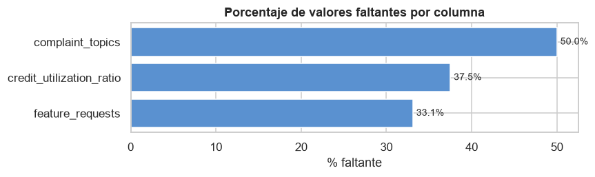
Filas duplicadas : 0
customer_id duplicados : 0
Conclusión (sección 4). Los faltantes se concentran en solo tres columnas —complaint_topics (50 %), credit_utilization_ratio (37,5 %) y feature_requests (33,1 %)— y el resto está prácticamente completo. No hay filas ni customer_id duplicados. Antes de imputar conviene entender por qué faltan (siguiente celda).
4.1 Faltantes: ¿aleatorios o estructurales?#
# Relacionamos cada columna con faltantes con otra que explica el NaN
falta_cred = df['credit_utilization_ratio'].isna()
print(f"\ncredit_utilization_ratio (faltan {falta_cred.mean()*100:.1f}%) segun credit_card:")
print(pd.crosstab(falta_cred, df['credit_card'], normalize='index').round(3).to_string())
for col, ref in [('complaint_topics', 'support_tickets_count'),
('feature_requests', 'feature_usage_diversity')]:
falta = df[col].isna()
print(f'\n{col} (faltan {falta.mean()*100:.1f}%) segun {ref}:')
print(' media de ' + ref + ' | falta=False vs True:',
df.groupby(falta)[ref].mean().round(2).to_dict())
# La AUSENCIA es informacion: creamos banderas has_*
for col in ['complaint_topics', 'feature_requests', 'credit_utilization_ratio']:
df['has_' + col] = df[col].notna().astype(int)
credit_utilization_ratio (faltan 37.5%) segun credit_card:
credit_card False True
credit_utilization_ratio
False 0.00 1.00
True 1.00 0.00
complaint_topics (faltan 50.0%) segun support_tickets_count:
media de support_tickets_count | falta=False vs True: {False: 1.0, True: 1.0}
feature_requests (faltan 33.1%) segun feature_usage_diversity:
media de feature_usage_diversity | falta=False vs True: {False: 2.37, True: 2.37}
Conclusión. El faltante de credit_utilization_ratio es estructural: la tabla de contingencia frente a credit_card es perfecta (el 100 % de los ausentes corresponde a clientes sin tarjeta), de modo que el NaN significa “no aplica” y no “dato perdido”. En cambio, complaint_topics y feature_requests no muestran relación con las variables de referencia examinadas, por lo que su ausencia se comporta como aproximadamente aleatoria. Decisión: crear banderas has_* que preserven la información de la ausencia e imputar 0 en la utilización de crédito únicamente a quienes tienen tarjeta; no imputar promedios, porque inventarían información.
4.2 Columnas de transacciones: ¿redundantes, escaladas o revueltas?#
El dataset trae dos grupos de columnas que resumen las transacciones. La sección original mostró que no coinciden; aquí averiguamos por qué.
pares = [('total_tx_volume', 'total_transaction_volume'),
('avg_tx_value', 'average_transaction_value'),
('tx_count', 'monthly_transaction_count')]
for a, b in pares:
ig = np.isclose(df[a].fillna(-1), df[b].fillna(-1))
print(f'{a:22s} vs {b:26s}: {ig.mean()*100:5.1f}% de filas coinciden')
total_tx_volume vs total_transaction_volume : 0.0% de filas coinciden
avg_tx_value vs average_transaction_value : 0.0% de filas coinciden
tx_count vs monthly_transaction_count : 0.0% de filas coinciden
def relacion(a, b):
x, y = df[a].astype(float), df[b].astype(float)
ok = x.notna() & y.notna()
alineadas = np.isclose(x[ok], y[ok]).mean() * 100 # coincidencia fila a fila
mismos = np.isclose(np.sort(x[ok].values), np.sort(y[ok].values)).mean() * 100 # como conjunto
with np.errstate(divide='ignore', invalid='ignore'):
ratio = np.nanmedian((y[ok] / x[ok]).replace([np.inf, -np.inf], np.nan))
return alineadas, mismos, ratio
pares = [('avg_tx_value', 'average_transaction_value'),
('total_tx_volume', 'total_transaction_volume'),
('tx_count', 'monthly_transaction_count'),
('transaction_frequency', 'avg_daily_transactions')]
filas = []
for a, b in pares:
al, mv, ratio = relacion(a, b)
filas.append([a + ' / ' + b, round(al, 1), round(mv, 1), round(ratio, 3)])
tab_dup = pd.DataFrame(filas, columns=['par de columnas', 'coinciden_fila_%',
'mismos_valores_%', 'ratio_b/a'])
display(tab_dup)
| par de columnas | coinciden_fila_% | mismos_valores_% | ratio_b/a | |
|---|---|---|---|---|
| 0 | avg_tx_value / average_transaction_value | 0.00 | 100.00 | 1.00 |
| 1 | total_tx_volume / total_transaction_volume | 0.00 | 100.00 | 0.99 |
| 2 | tx_count / monthly_transaction_count | 0.00 | 0.00 | 0.12 |
| 3 | transaction_frequency / avg_daily_transactions | 100.00 | 100.00 | 1.00 |
Conclusión. Dos pares comparten el 100 % de sus valores pero 0 % de coincidencia fila a fila: son la misma variable revuelta respecto del identificador de cliente, es decir, un duplicado corrupto y no una medida alternativa. El par tx_count / monthly_transaction_count sí corresponde a la misma magnitud en otra ventana temporal, y transaction_frequency ≡ avg_daily_transactions es un duplicado exacto. Decisión: conservar una sola columna de cada grupo; en la sección 9.3 se verifica cuál cuadra con las transacciones reales.
Diagnóstico por par:
Par de columnas |
Diagnóstico |
|---|---|
|
Duplicado desalineado (misma variable revuelta) |
|
Duplicado desalineado (misma variable revuelta) |
|
Misma magnitud en otra ventana temporal |
|
Duplicado exacto y alineado |
4.3 Rangos acotados y valores sospechosos#
for c in ['age', 'churn_probability', 'customer_tenure', 'satisfaction_score']:
s = df[c]
print(f'{c:22s} min={s.min():>10.2f} max={s.max():>12.2f} '
f'p1={s.quantile(.01):>10.2f} p99={s.quantile(.99):>12.2f}')
z = int((df['customer_lifetime_value'] == 0).sum())
print(f'\ncustomer_lifetime_value == 0 (exacto): {z:,} clientes ({z/len(df)*100:.2f}%)')
age min= 29.00 max= 60.00 p1= 29.00 p99= 60.00
churn_probability min= 0.11 max= 0.50 p1= 0.17 p99= 0.46
customer_tenure min= 4.70 max= 11.97 p1= 8.63 p99= 11.97
satisfaction_score min= 2.00 max= 6.00 p1= 3.00 p99= 5.00
customer_lifetime_value == 0 (exacto): 1 clientes (0.00%)
Conclusión. Varias variables presentan límites artificiales: age se restringe exactamente a 29–60 años, customer_tenure se satura en 11,97 y churn_probability se mueve solo entre 0,11 y 0,50. Que una probabilidad no alcance nunca 0 ni 1 indica que es un puntaje ya calculado, no un evento de fuga observado. Solo un cliente presenta CLV exactamente igual a cero (0,00 %), volumen irrelevante. Implicación: no extrapolar fuera de los rangos observados y auditar cómo se generó churn (sección 7.1).
Conclusión (secciones 4.1–4.3). Como podemos ver, avg_tx_value≡average_transaction_value y total_tx_volume≡total_transaction_volume tienen estadísticos idénticos pero 0 % de coincidencia fila a fila: son la misma variable revuelta, no dos medidas distintas (corrige la interpretación de “total histórico vs mensual”). En cambio tx_count (media 64,8 = 3.159.157 ⁄ 48.723) sí refleja las transacciones reales y monthly_transaction_count es su versión mensual. Varias variables están acotadas de forma artificial, lo que sugiere un dataset parcialmente sintético. Además, la prueba confirma un caso idéntico y alineado: transaction_frequency ≡ avg_daily_transactions (100 % de coincidencia), otro duplicado a descartar.
5. Análisis univariado#
5.1 Variables numéricas#
vars_num = ['age', 'household_size', 'active_products', 'customer_tenure',
'satisfaction_score', 'nps_score', 'app_logins_frequency', 'feature_usage_diversity',
'credit_utilization_ratio', 'support_tickets_count', 'resolved_tickets_ratio',
'app_store_rating', 'tx_count', 'avg_tx_value', 'total_tx_volume',
'weekend_transaction_ratio', 'churn_probability', 'customer_lifetime_value']
ncols = 3; nrows = int(np.ceil(len(vars_num) / ncols))
fig, axes = plt.subplots(nrows, ncols, figsize=(15, 3.1 * nrows))
for ax, c in zip(axes.ravel(), vars_num):
sns.histplot(df[c].dropna(), bins=40, ax=ax, color=PAL[0])
ax.set_title(c, fontsize=10); ax.set_xlabel(''); ax.set_ylabel('')
if df[c].max() > 1e6: ax.xaxis.set_major_formatter(FMT)
for ax in axes.ravel()[len(vars_num):]: ax.axis('off')
fig.suptitle('Distribuciones — variables numericas', y=1.002, fontsize=14, fontweight='bold')
plt.tight_layout(); plt.show()
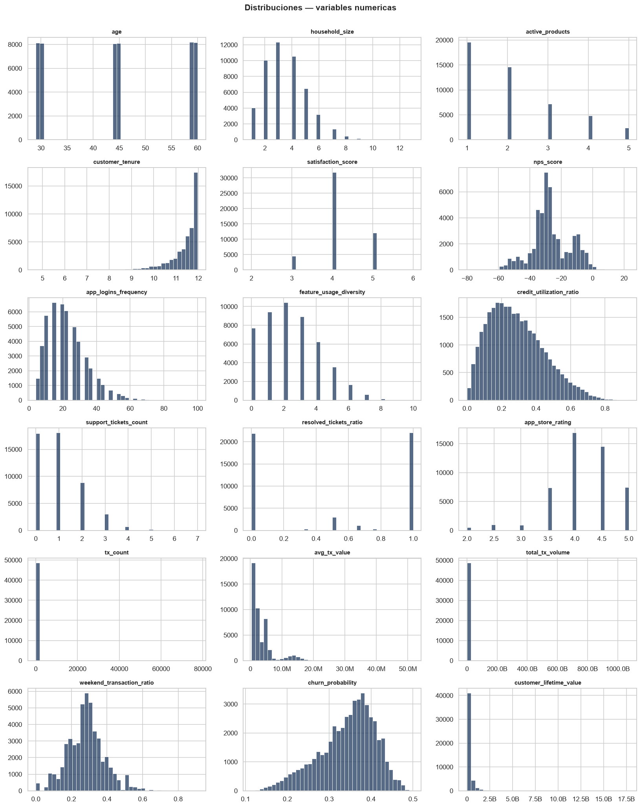
Las variables monetarias están muy sesgadas a la derecha; las vemos en escala logarítmica.
vars_log = ['avg_tx_value', 'total_tx_volume', 'total_transaction_volume', 'customer_lifetime_value']
fig, axes = plt.subplots(1, len(vars_log), figsize=(3.6 * len(vars_log), 4.2))
axes = np.atleast_1d(axes)
for ax, c in zip(axes, vars_log):
sns.boxplot(y=np.log1p(df[c].clip(lower=0)), ax=ax, color=PAL[2])
ax.set_title(f'log1p({c})', fontsize=10); ax.set_ylabel('')
plt.tight_layout(); plt.show()
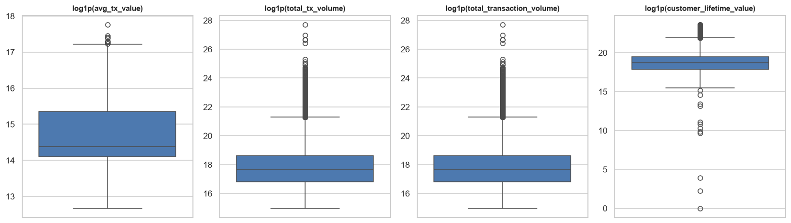
5.2 Variables categóricas#
vars_cat = ['gender', 'income_bracket', 'education_level', 'marital_status',
'acquisition_channel', 'customer_segment', 'clv_segment', 'feedback_sentiment',
'preferred_transaction_type']
ncols = 3; nrows = int(np.ceil(len(vars_cat) / ncols))
fig, axes = plt.subplots(nrows, ncols, figsize=(15, 3.4 * nrows))
for ax, c in zip(axes.ravel(), vars_cat):
vc = df[c].value_counts()
ax.barh(vc.index.astype(str), vc.values, color=PAL[:len(vc)])
ax.set_title(c, fontsize=10); ax.invert_yaxis()
for ax in axes.ravel()[len(vars_cat):]: ax.axis('off')
fig.suptitle('Frecuencias — variables categoricas', y=1.002, fontsize=14, fontweight='bold')
plt.tight_layout(); plt.show()
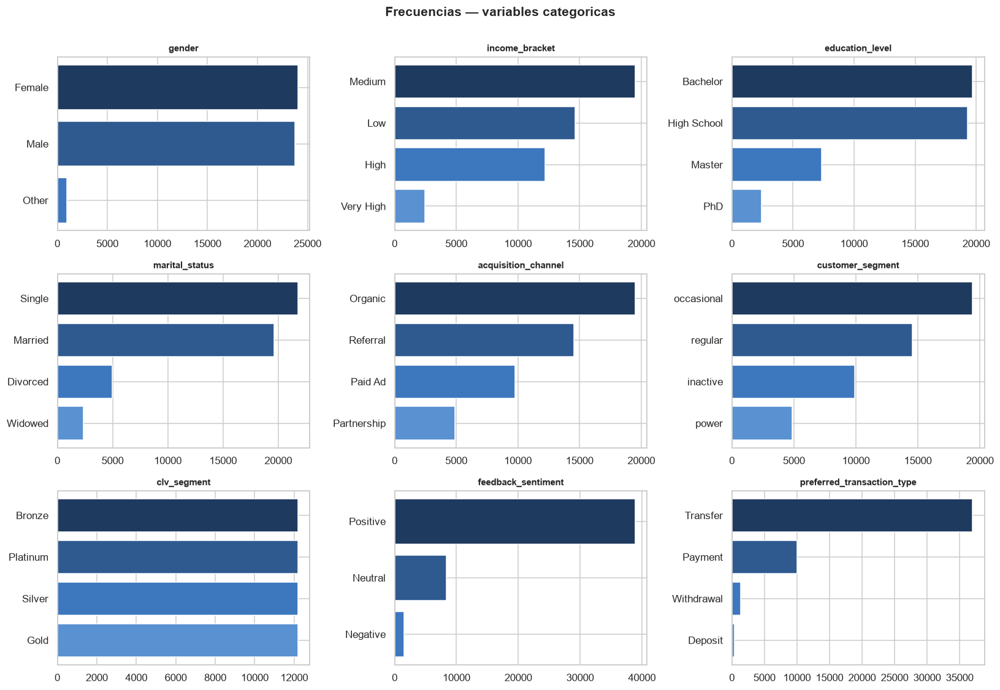
# Categoricas con muchos niveles: top 15
for c in ['occupation', 'location']:
vc = df[c].value_counts().head(15)
plt.figure(figsize=(9, 5))
sns.barplot(x=vc.values, y=vc.index.astype(str), color=AZUL)
plt.title(f'Top 15 — {c}'); plt.xlabel('numero de clientes'); plt.ylabel('')
plt.tight_layout(); plt.show()
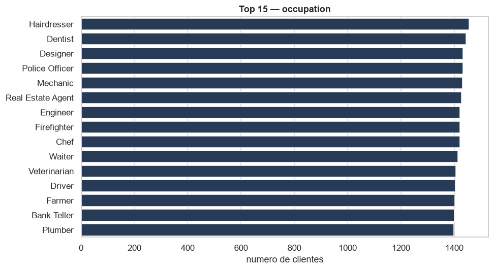
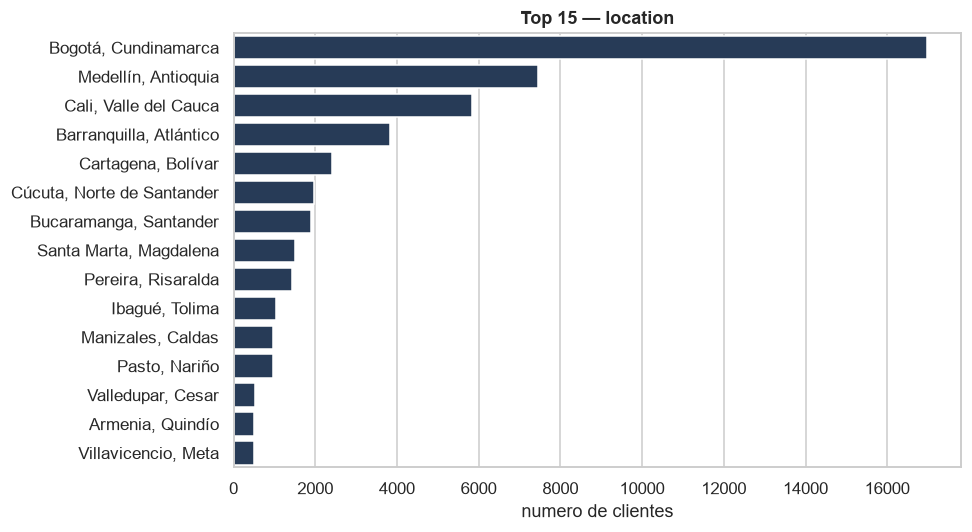
5.3 Tenencia y adopción de productos#
prod = ['savings_account', 'credit_card', 'personal_loan', 'investment_account',
'insurance_product', 'bill_payment_user', 'auto_savings_enabled']
tasas = (df[prod].mean() * 100).sort_values()
plt.figure(figsize=(8, 4.5))
sns.barplot(x=tasas.values, y=tasas.index, color=AZUL)
for i, v in enumerate(tasas.values): plt.text(v + 0.6, i, f'{v:.0f}%', va='center')
plt.title('Tasa de tenencia / adopcion por producto'); plt.xlabel('% de clientes'); plt.ylabel('')
plt.xlim(0, 100); plt.tight_layout(); plt.show()
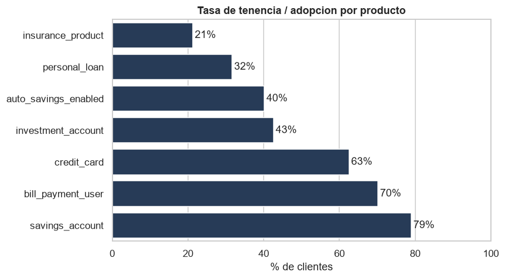
5.4 Cuantificación de outliers (regla IQR 1,5×)#
Los diagramas de caja muestran los atípicos; aquí los contamos.
filas = []
for c in col_num:
n, pct, lo, hi = outliers_iqr(df[c])
filas.append((c, n, pct, round(lo, 2), round(hi, 2)))
tab_out = (pd.DataFrame(filas, columns=['variable', 'n_outliers', '%', 'lim_inf', 'lim_sup'])
.sort_values('%', ascending=False).reset_index(drop=True))
display(tab_out.head(15))
peor = tab_out.iloc[0]
| variable | n_outliers | % | lim_inf | lim_sup | |
|---|---|---|---|---|---|
| 0 | failed_transactions | 8818 | 18.10 | 0.00 | 0.00 |
| 1 | monthly_transaction_count | 6394 | 13.10 | -0.64 | 5.33 |
| 2 | transaction_frequency | 5889 | 12.10 | -0.05 | 0.20 |
| 3 | avg_daily_transactions | 5889 | 12.10 | -0.05 | 0.20 |
| 4 | tx_satisfaction | 5783 | 11.90 | -0.11 | 0.35 |
| 5 | tx_count | 5783 | 11.90 | -22.50 | 69.50 |
| 6 | total_tx_volume | 5379 | 11.00 | -130,271,375.00 | 270,874,825.00 |
| 7 | total_transaction_volume | 5379 | 11.00 | -130,271,375.00 | 270,874,825.00 |
| 8 | customer_lifetime_value | 4811 | 9.90 | -299,997,892.00 | 655,768,175.53 |
| 9 | average_transaction_value | 4602 | 9.40 | -3,640,018.33 | 9,637,669.18 |
| 10 | avg_tx_value | 4602 | 9.40 | -3,640,018.33 | 9,637,669.18 |
| 11 | product_satisfaction | 3912 | 8.00 | 0.10 | 0.90 |
| 12 | customer_tenure | 3248 | 6.70 | 10.12 | 12.92 |
| 13 | app_store_rating | 2421 | 5.00 | 3.25 | 5.25 |
| 14 | weekend_transaction_ratio | 1388 | 2.80 | 0.03 | 0.53 |
Conclusión. Los atípicos se concentran en variables de conteo y monetarias, encabezadas por failed_transactions (18,1 %), monthly_transaction_count (13,1 %) y transaction_frequency (12,1 %). No son errores de captura sino colas legítimas de distribuciones asimétricas: en failed_transactions la mediana y ambos cuartiles valen cero, de modo que cualquier cliente con una sola incidencia queda marcado por construcción de la regla. Decisión: conservarlos y aplicar transformación logarítmica a las variables monetarias, en lugar de eliminar filas.
Conclusión (sección 5). Las distribuciones numéricas confirman fuerte asimetría a la derecha en total_tx_volume, avg_tx_value y customer_lifetime_value (de ahí que sus outliers por IQR sean tan numerosos): son colas legítimas, no errores, y piden transformación logarítmica antes de modelar. age se concentra en 29–30 y luego se reparte hasta 60. En categóricas, Transfer domina el tipo de transacción preferido y la adopción de productos es desigual (unos pocos productos concentran la tenencia). El recuento por IQR sitúa a la cabeza a failed_transactions (18,1 % de atípicos), monthly_transaction_count (13,1 %) y transaction_frequency (12,1 %).
6. Relaciones entre variables numéricas#
Matriz de correlación (Pearson) y variables más asociadas a cada objetivo.
corr = df[col_num].corr()
plt.figure(figsize=(14, 11))
sns.heatmap(corr, cmap='Blues', vmin=-1, vmax=1, square=True,
linewidths=0.3, cbar_kws={'shrink': 0.6})
plt.title('Matriz de correlacion — variables numericas'); plt.tight_layout(); plt.show()
for obj in ['churn_probability', 'customer_lifetime_value']:
top = corr[obj].drop(obj).abs().sort_values(ascending=False).head(8)
print(f'\nTop correlaciones (|r|) con {obj}:')
print(corr[obj].loc[top.index].round(3).to_string())
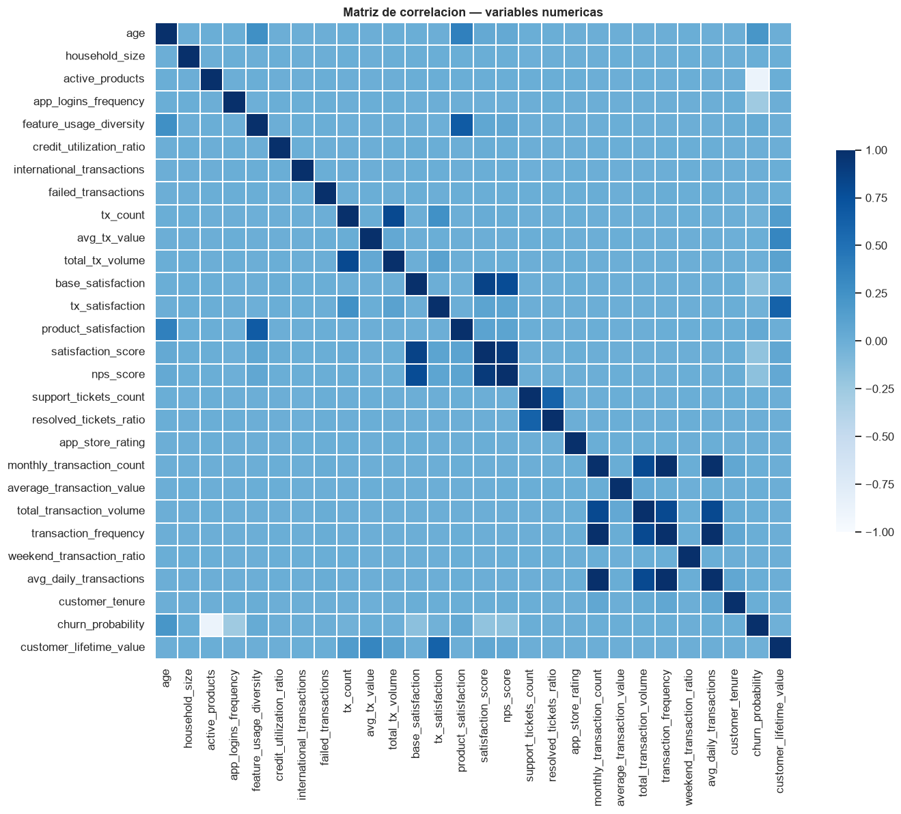
Top correlaciones (|r|) con churn_probability:
active_products -0.88
app_logins_frequency -0.26
age 0.21
satisfaction_score -0.18
nps_score -0.17
base_satisfaction -0.16
product_satisfaction 0.04
feature_usage_diversity 0.03
Top correlaciones (|r|) con customer_lifetime_value:
tx_satisfaction 0.61
avg_tx_value 0.34
tx_count 0.16
total_tx_volume 0.11
satisfaction_score 0.06
nps_score 0.05
churn_probability -0.02
app_store_rating -0.01
6.1 Spearman vs Pearson en variables sesgadas#
for obj in ['churn_probability', 'customer_lifetime_value']:
p = df[col_num].corr('pearson')[obj].drop(obj)
s = df[col_num].corr('spearman')[obj].drop(obj)
comp = pd.DataFrame({'pearson': p, 'spearman': s})
top = comp.reindex(comp['spearman'].abs().sort_values(ascending=False).index).head(6)
print(f'Top asociaciones con {obj} (por |Spearman|):')
display(top.round(3))
Top asociaciones con churn_probability (por |Spearman|):
| pearson | spearman | |
|---|---|---|
| active_products | -0.88 | -0.84 |
| app_logins_frequency | -0.26 | -0.28 |
| age | 0.21 | 0.21 |
| satisfaction_score | -0.18 | -0.19 |
| base_satisfaction | -0.16 | -0.16 |
| nps_score | -0.17 | -0.16 |
Top asociaciones con customer_lifetime_value (por |Spearman|):
| pearson | spearman | |
|---|---|---|
| total_tx_volume | 0.11 | 0.98 |
| avg_tx_value | 0.34 | 0.76 |
| tx_satisfaction | 0.61 | 0.56 |
| tx_count | 0.16 | 0.56 |
| satisfaction_score | 0.06 | 0.05 |
| nps_score | 0.05 | 0.04 |
Conclusión. El contraste es decisivo para el CLV: su correlación de Pearson con total_tx_volume es de apenas 0,11, pero la de Spearman asciende a 0,98, es decir, una relación monótona casi perfecta que Pearson no detecta por la extrema asimetría de ambas variables. Evaluar la asociación solo con Pearson habría llevado a descartar el mejor predictor disponible. Decisión: trabajar los montos en escala logarítmica, donde esa relación se vuelve aprovechable por modelos lineales.
6.2 Pares numéricos casi redundantes (|r| > 0,9)#
corr_abs = df[col_num].corr().abs()
pares_red = (corr_abs.where(np.triu(np.ones(corr_abs.shape), 1).astype(bool))
.stack().sort_values(ascending=False))
altos = pares_red[pares_red > 0.9]
for (a, b), r in altos.items():
print(f' r={r:.3f} {a} <-> {b}')
r=1.000 transaction_frequency <-> avg_daily_transactions
r=1.000 monthly_transaction_count <-> avg_daily_transactions
r=1.000 monthly_transaction_count <-> transaction_frequency
r=0.917 satisfaction_score <-> nps_score
Conclusión. Se detecta un bloque de tres variables mutuamente idénticas (monthly_transaction_count, transaction_frequency y avg_daily_transactions, con r = 1,000 entre sí) y un par de satisfacción fuertemente asociado (satisfaction_score y nps_score, r = 0,917). Esta redundancia infla la varianza de los coeficientes en modelos lineales. Decisión: conservar una sola variable de cada grupo.
6.3 Asociación entre variables categóricas (Cramér’s V)#
cats = ['gender', 'income_bracket', 'education_level', 'marital_status',
'acquisition_channel', 'customer_segment', 'clv_segment', 'feedback_sentiment',
'preferred_transaction_type']
V = pd.DataFrame(index=cats, columns=cats, dtype=float)
for a in cats:
for b in cats:
V.loc[a, b] = 1.0 if a == b else cramers_v(df[a], df[b])
display(V.round(2))
mask = ~np.eye(len(cats), dtype=bool)
mx = V.where(mask).stack().astype(float)
(pa, pb), val = mx.idxmax(), mx.max()
| gender | income_bracket | education_level | marital_status | acquisition_channel | customer_segment | clv_segment | feedback_sentiment | preferred_transaction_type | |
|---|---|---|---|---|---|---|---|---|---|
| gender | 1.00 | 0.00 | 0.00 | 0.00 | 0.00 | 0.00 | 0.00 | 0.00 | 0.00 |
| income_bracket | 0.00 | 1.00 | 0.38 | 0.00 | 0.00 | 0.01 | 0.01 | 0.01 | 0.00 |
| education_level | 0.00 | 0.38 | 1.00 | 0.00 | 0.01 | 0.01 | 0.00 | 0.01 | 0.00 |
| marital_status | 0.00 | 0.00 | 0.00 | 1.00 | 0.00 | 0.00 | 0.00 | 0.00 | 0.00 |
| acquisition_channel | 0.00 | 0.00 | 0.01 | 0.00 | 1.00 | 0.00 | 0.00 | 0.00 | 0.01 |
| customer_segment | 0.00 | 0.01 | 0.01 | 0.00 | 0.00 | 1.00 | 0.38 | 0.00 | 0.01 |
| clv_segment | 0.00 | 0.01 | 0.00 | 0.00 | 0.00 | 0.38 | 1.00 | 0.00 | 0.01 |
| feedback_sentiment | 0.00 | 0.01 | 0.01 | 0.00 | 0.00 | 0.00 | 0.00 | 1.00 | 0.01 |
| preferred_transaction_type | 0.00 | 0.00 | 0.00 | 0.00 | 0.01 | 0.01 | 0.01 | 0.01 | 1.00 |
Conclusión. La asociación entre categóricas es baja en general, con dos excepciones moderadas: customer_segment ↔ clv_segment y income_bracket ↔ education_level, ambas con V = 0,38. La primera es esperable, pues las dos describen la intensidad de la relación comercial. El resto de los pares presenta valores cercanos a cero, lo que indica independencia y descarta redundancia entre las variables categóricas.
Conclusión (sección 6). Como podemos ver, el predictor dominante de churn es active_products (r = −0,88); el resto (logins, edad, satisfacción, NPS) queda por debajo de |0,3|. Para customer_lifetime_value mandan tx_satisfaction (0,61) y avg_tx_value (0,34). Spearman confirma estas relaciones y, en las monetarias, suele superar a Pearson (relación monótona pero curva). La revisión de |r| > 0,9 delata los duplicados detectados en 4.2.
7. Objetivo 1 — Probabilidad de fuga (churn_probability)#
fig, axes = plt.subplots(1, 2, figsize=(13, 4))
sns.histplot(df['churn_probability'], bins=40, ax=axes[0], color=PAL[3])
axes[0].set_title('Distribucion de churn_probability'); axes[0].set_xlabel('churn_probability')
sns.boxplot(data=df, x='customer_segment', y='churn_probability', ax=axes[1], color=AZUL)
axes[1].set_title('churn_probability por customer_segment')
plt.tight_layout(); plt.show()
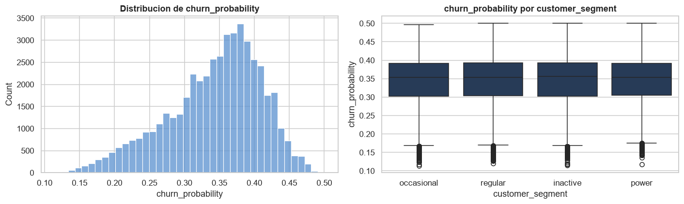
# churn promedio segun la tenencia de cada producto
med = {c: [df.loc[~df[c], 'churn_probability'].mean(),
df.loc[df[c], 'churn_probability'].mean()] for c in prod}
mm = pd.DataFrame(med, index=['sin producto', 'con producto']).T
ax = mm.plot(kind='barh', figsize=(9, 5), color=[PAL[7], PAL[0]])
ax.set_title('churn_probability promedio segun tenencia de cada producto')
ax.set_xlabel('churn_probability promedio'); ax.legend(title='')
plt.tight_layout(); plt.show()
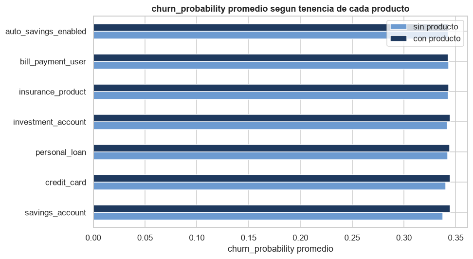
# churn frente a satisfaccion y a NPS
fig, axes = plt.subplots(1, 2, figsize=(13, 4))
sns.boxplot(data=df, x='satisfaction_score', y='churn_probability', ax=axes[0], color=AZUL)
axes[0].set_title('churn_probability vs satisfaction_score')
axes[1].scatter(df['nps_score'], df['churn_probability'], s=6, alpha=0.25, color=PAL[1])
axes[1].set_xlabel('nps_score'); axes[1].set_ylabel('churn_probability')
axes[1].set_title('churn_probability vs nps_score')
plt.tight_layout(); plt.show()
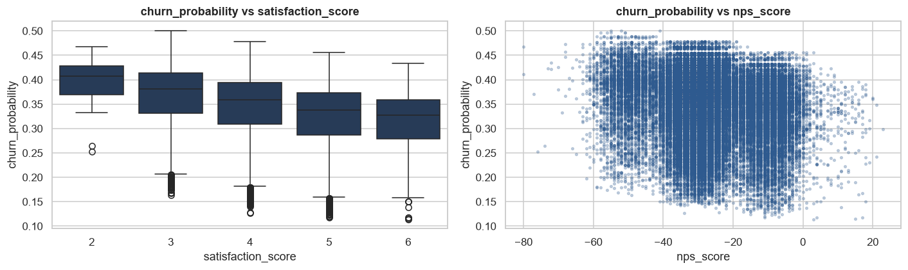
7.1 ¿Es churn una función de active_products? (posible fuga de datos)#
La correlación de −0,88 es tan alta que conviene mirarla de cerca antes de modelar.
r = df[['active_products', 'churn_probability']].corr().iloc[0, 1]
print(f'Correlacion churn ~ active_products : r = {r:.3f} -> R^2 = {r**2:.3f}')
print('churn_probability por numero de productos activos:')
g = df.groupby('active_products')['churn_probability'].agg(['mean', 'std', 'count'])
display(g.round(3))
caida = g['mean'].diff().dropna()
print(f'\nCada producto adicional cambia el churn medio en {caida.mean():+.3f} (escalon casi constante).')
Correlacion churn ~ active_products : r = -0.876 -> R^2 = 0.767
churn_probability por numero de productos activos:
| mean | std | count | |
|---|---|---|---|
| active_products | |||
| 1 | 0.40 | 0.03 | 19576 |
| 2 | 0.35 | 0.03 | 14653 |
| 3 | 0.30 | 0.03 | 7197 |
| 4 | 0.25 | 0.03 | 4871 |
| 5 | 0.20 | 0.03 | 2426 |
Cada producto adicional cambia el churn medio en -0.050 (escalon casi constante).
Conclusión — hallazgo crítico. La fuga está casi determinada por active_products: r = −0,876, de modo que un único predictor explica el 76,7 % de su varianza. Además, la relación es una escalera de paso exactamente constante (−0,05 por producto) con desviación estándar idéntica (0,03) en los cinco grupos. Una regularidad así no es propia de un fenómeno de comportamiento observado, en el que cabría esperar efectos decrecientes y varianza heterogénea. Todo indica que churn_probability fue generada a partir de active_products mediante una regla determinista más ruido.
Riesgo de fuga de información: un modelo que incluya active_products mostraría métricas excelentes que no reflejarían capacidad predictiva real, sino la recuperación de la fórmula generadora. Decisión: auditar la construcción de la etiqueta y reportar el desempeño con y sin esa variable.
7.2 churn según variables categóricas (tamaño de efecto eta²)#
cats_obj = ['acquisition_channel', 'income_bracket', 'customer_segment',
'location', 'education_level', 'preferred_transaction_type']
ef = sorted(((c, eta2(df[c], df['churn_probability'])) for c in cats_obj),
key=lambda t: t[1], reverse=True)
for c, e in ef:
print(f' eta^2 = {e:.4f} {c}')
top_cat = ef[0][0]
print(f'\nchurn promedio por {top_cat}:')
print(df.groupby(top_cat)['churn_probability'].mean().sort_values(ascending=False).round(3).to_string())
eta^2 = 0.0050 income_bracket
eta^2 = 0.0004 location
eta^2 = 0.0002 education_level
eta^2 = 0.0001 preferred_transaction_type
eta^2 = 0.0001 customer_segment
eta^2 = 0.0000 acquisition_channel
churn promedio por income_bracket:
income_bracket
Very High 0.35
High 0.35
Medium 0.34
Low 0.34
Conclusión. El tamaño de efecto η² mide qué fracción de la varianza de la fuga explica cada variable categórica. Ninguna supera el 0,5 % (income_bracket encabeza con 0,0050), lo que confirma que el perfil demográfico, la ubicación y el canal de adquisición aportan una señal marginal frente al número de productos activos.
Conclusión (sección 7). El churn está casi determinado por active_products (R² = 0,767 con r = −0,876; escalón casi constante): es la señal más importante y la más sospechosa, porque apunta a una etiqueta construida a partir de esa variable. La satisfacción, el NPS y el engagement aportan una señal débil pero coherente (a más satisfacción/NPS, menos churn). Las categóricas explican poca varianza (eta² bajo). Para el modelo: binarizar churn, tratar active_products con cuidado por la posible fuga y validar la construcción de la etiqueta.
8. Objetivo 2 — Valor del cliente (customer_lifetime_value / clv_segment)#
clv = 'customer_lifetime_value'
fig, axes = plt.subplots(1, 2, figsize=(13, 4))
sns.histplot(np.log1p(df[clv]), bins=40, ax=axes[0], color=PAL[2])
axes[0].set_title('Distribucion de log1p(customer_lifetime_value)'); axes[0].set_xlabel('log1p(CLV)')
orden = ['Bronze', 'Silver', 'Gold', 'Platinum']
sns.boxplot(data=df, x='clv_segment', y=clv, order=orden, ax=axes[1], color=AZUL)
axes[1].set_yscale('log'); axes[1].set_title('CLV por clv_segment (escala log)')
plt.tight_layout(); plt.show()
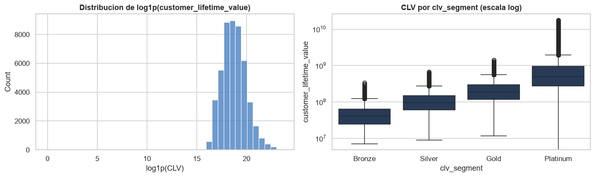
fig, axes = plt.subplots(1, 2, figsize=(13, 4))
sns.boxplot(data=df, x='active_products', y=clv, ax=axes[0], color=AZUL)
axes[0].set_yscale('log'); axes[0].set_title('CLV por numero de productos activos')
axes[1].scatter(df['total_tx_volume'].clip(lower=1), df[clv].clip(lower=1),
s=6, alpha=0.25, color=PAL[0])
axes[1].set_xscale('log'); axes[1].set_yscale('log')
axes[1].set_xlabel('total_tx_volume'); axes[1].set_ylabel('CLV')
axes[1].set_title('CLV vs volumen total de transacciones')
plt.tight_layout(); plt.show()
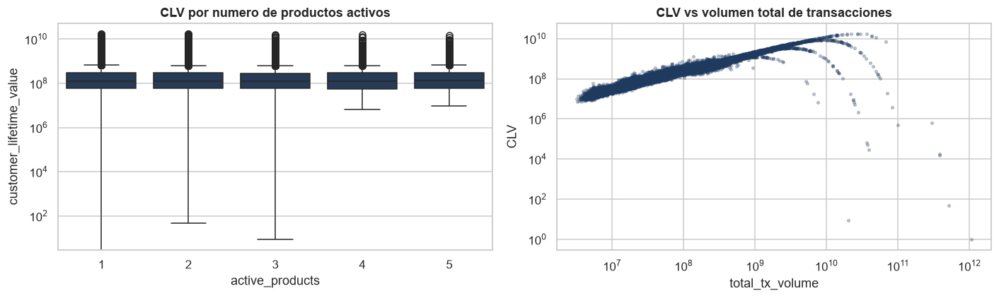
# Relacion entre los dos objetivos: churn vs CLV
plt.figure(figsize=(7.5, 5))
sc = plt.scatter(df['churn_probability'], df[clv].clip(lower=1),
s=7, alpha=0.3, c=df['satisfaction_score'], cmap='Blues')
plt.yscale('log'); plt.xlabel('churn_probability'); plt.ylabel('CLV (log)')
plt.title('churn_probability vs CLV')
plt.colorbar(sc, label='satisfaction_score')
plt.tight_layout(); plt.show()
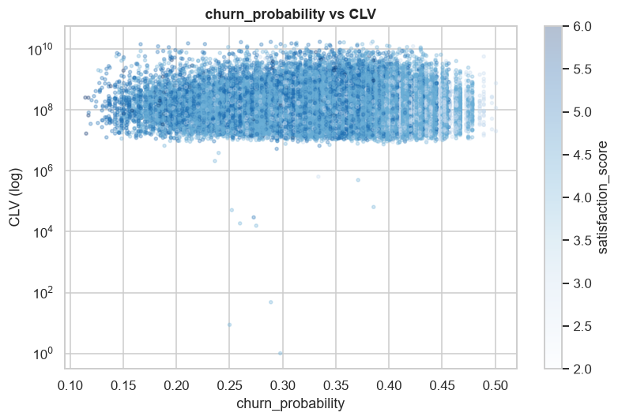
8.1 Drivers de CLV y clientes de valor cero#
clv = 'customer_lifetime_value'
for c in ['clv_segment', 'active_products', 'customer_segment']:
print(f'\nCLV mediana por {c}:')
print(df.groupby(c)[clv].median().round(0).to_string())
e = eta2(df['clv_segment'], df[clv])
z = (df[clv] == 0).mean() * 100
print(f'\neta^2(clv_segment -> CLV) = {e:.3f} | clientes con CLV=0: {z:.2f}%')
CLV mediana por clv_segment:
clv_segment
Bronze 41,085,092.00
Gold 191,092,968.00
Platinum 492,539,268.00
Silver 95,773,233.00
CLV mediana por active_products:
active_products
1 129,183,095.00
2 129,741,109.00
3 128,860,357.00
4 129,386,883.00
5 137,615,269.00
CLV mediana por customer_segment:
customer_segment
inactive 31,452,136.00
occasional 87,991,123.00
power 534,097,996.00
regular 236,107,008.00
eta^2(clv_segment -> CLV) = 0.194 | clientes con CLV=0: 0.00%
Conclusión. El CLV crece de forma monótona y de gran amplitud con clv_segment (de 4,11 × 10⁷ en Bronze a 4,93 × 10⁸ en Platinum, con η² = 0,194) y con customer_segment (de 3,15 × 10⁷ en clientes inactivos a 5,34 × 10⁸ en los más activos). En cambio, no varía con el número de productos activos: permanece en torno a 1,29 × 10⁸ entre uno y cuatro productos. Es decir, la variable que casi determina la fuga no guarda relación con el valor del cliente; este se explica por la intensidad transaccional. Ambos objetivos responden, por tanto, a mecanismos distintos.
Conclusión (sección 8). El CLV está fuertemente sesgado (mediana ≈ 129,7 M vs media ≈ 328,2 M COP) y crece de forma ordenada con clv_segment y con el número de productos activos: el segmento es un buen resumen del valor. Conviene modelarlo en escala logarítmica y decidir qué hacer con los clientes de CLV = 0.
9. Análisis de las transacciones (transactions_data.csv)#
Comportamiento por transacción: montos por tipo, evolución temporal y agregación por cliente.
print('Estructura:'); print(tx.dtypes.to_string())
print('\nRango de fechas:', tx['date'].min().date(), '->', tx['date'].max().date())
print('Transacciones :', f'{len(tx):,} | clientes distintos: {tx.customer_id.nunique():,}')
print('\nPor tipo:'); print(tx['type'].value_counts().to_string())
display(tx.head())
Estructura:
customer_id int64
date datetime64[us]
amount int64
type str
Rango de fechas: 2023-01-04 -> 2023-12-29
Transacciones : 3,159,157 | clientes distintos: 48,723
Por tipo:
type
Transfer 1433963
Payment 970548
Withdrawal 456577
Deposit 298069
| customer_id | date | amount | type | |
|---|---|---|---|---|
| 0 | 93716481 | 2023-11-23 | 1262800 | Transfer |
| 1 | 93716481 | 2023-01-05 | 928900 | Withdrawal |
| 2 | 93716481 | 2023-11-05 | 1683100 | Payment |
| 3 | 93716481 | 2023-04-14 | 4507350 | Payment |
| 4 | 93716481 | 2023-08-04 | 2096150 | Payment |
# Distribucion del monto por tipo de transaccion (escala log)
plt.figure(figsize=(9, 5))
sns.boxplot(data=tx, x='type', y='amount', color=AZUL)
plt.yscale('log'); plt.title('Distribucion del monto por tipo de transaccion')
plt.ylabel('amount (escala log)'); plt.xlabel('')
plt.tight_layout(); plt.show()
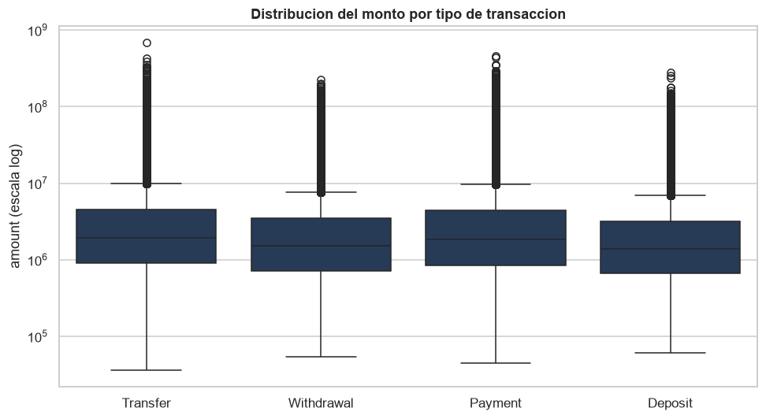
# Evolucion temporal: numero de transacciones y volumen por mes
tx['mes'] = tx['date'].dt.to_period('M').dt.to_timestamp()
serie = tx.groupby('mes').agg(n=('amount', 'size'), volumen=('amount', 'sum'))
fig, ax = plt.subplots(1, 2, figsize=(14, 4))
ax[0].plot(serie.index, serie['n'], marker='o', color=PAL[0])
ax[0].set_title('Numero de transacciones por mes'); ax[0].set_ylabel('conteo')
ax[1].plot(serie.index, serie['volumen'], marker='o', color=PAL[2])
ax[1].set_title('Volumen ($) por mes'); ax[1].yaxis.set_major_formatter(FMT)
for a in ax: a.tick_params(axis='x', rotation=45)
plt.tight_layout(); plt.show()
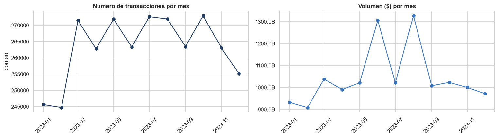
# Patron por dia de la semana y composicion mensual por tipo
dias = ['Lun','Mar','Mie','Jue','Vie','Sab','Dom']
tx['dow'] = tx['date'].dt.dayofweek
fig, ax = plt.subplots(1, 2, figsize=(14, 4))
cnt = tx['dow'].value_counts().sort_index()
sns.barplot(x=[dias[i] for i in cnt.index], y=cnt.values, color=AZUL, ax=ax[0])
ax[0].set_title('Transacciones por dia de la semana'); ax[0].set_ylabel('conteo')
comp = tx.groupby(['mes', 'type']).size().unstack(fill_value=0)
comp.plot(kind='area', stacked=True, ax=ax[1], colormap='Blues')
ax[1].set_title('Composicion mensual por tipo'); ax[1].set_ylabel('nro transacciones'); ax[1].set_xlabel('')
plt.tight_layout(); plt.show()
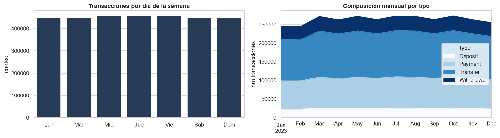
9.1 Agregación por cliente y cruce con la tabla de clientes#
agg = (tx.groupby('customer_id')
.agg(n_tx=('amount', 'size'), volumen_calc=('amount', 'sum'),
monto_medio=('amount', 'mean'),
primera=('date', 'min'), ultima=('date', 'max'))
.reset_index())
print(f'Clientes con transacciones: {agg.shape[0]:,} de {df.shape[0]:,}')
m = df.merge(agg, on='customer_id', how='inner')
print(f'Clientes cruzados : {m.shape[0]:,}')
fig, axes = plt.subplots(1, 2, figsize=(13, 5))
axes[0].scatter(m['total_tx_volume'].clip(lower=1), m['volumen_calc'].clip(lower=1),
s=7, alpha=0.3, color=PAL[0])
axes[0].set_xscale('log'); axes[0].set_yscale('log')
axes[0].set_xlabel('total_tx_volume (reportado)'); axes[0].set_ylabel('volumen calculado')
axes[0].set_title('Volumen: reportado vs calculado')
m['quintil_ntx'] = pd.qcut(m['n_tx'], 5, duplicates='drop')
g = m.groupby('quintil_ntx', observed=True)['churn_probability'].mean()
axes[1].bar(range(len(g)), g.values, color=PAL[3])
axes[1].set_xticks(range(len(g)))
axes[1].set_xticklabels([str(i) for i in g.index], rotation=20, ha='right', fontsize=8)
axes[1].set_title('churn promedio por quintil de nro de transacciones')
axes[1].set_ylabel('churn_probability')
plt.tight_layout(); plt.show()
Clientes con transacciones: 48,723 de 48,723
Clientes cruzados : 48,723
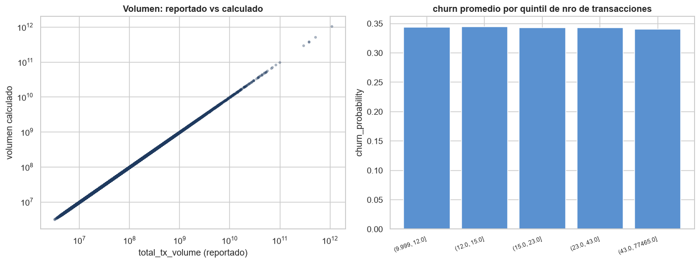
9.2 Calidad de la tabla de transacciones#
print('Filas duplicadas exactas :', int(tx.duplicated().sum()))
print('Montos <= 0 :', int((tx['amount'] <= 0).sum()))
print('Fechas nulas :', int(tx['date'].isna().sum()))
en_tx = set(tx['customer_id'].unique()); en_cli = set(df['customer_id'].unique())
print(f'Clientes en tx sin perfil: {len(en_tx - en_cli):,}')
print(f'Clientes sin transaccion : {len(en_cli - en_tx):,}')
Filas duplicadas exactas : 102
Montos <= 0 : 0
Fechas nulas : 0
Clientes en tx sin perfil: 0
Clientes sin transaccion : 0
Conclusión. La tabla de transacciones es consistente con la de clientes: no hay clientes huérfanos, montos menores o iguales a cero, ni fechas nulas, y los 48.723 clientes registran actividad. Se detectan 102 filas exactamente duplicadas (0,003 %), volumen despreciable que se elimina por consistencia. Cabe advertir que el signo de la operación reside solo en el campo type, pues todos los montos son positivos: calcular flujos netos (depósitos − retiros) exigirá aplicar el signo según el tipo.
9.3 ¿Qué columna reportada cuadra con las transacciones reales?#
real = tx.groupby('customer_id')['amount'].agg(n_real='size', vol_real='sum', avg_real='mean')
mm = df.set_index('customer_id').join(real)
def cuadra(col, ref):
ok = mm[col].notna() & mm[ref].notna()
return np.isclose(mm.loc[ok, col].astype(float), mm.loc[ok, ref].astype(float), rtol=0.01).mean() * 100
filas = []
for col, ref in [('tx_count', 'n_real'), ('monthly_transaction_count', 'n_real'),
('total_tx_volume', 'vol_real'), ('total_transaction_volume', 'vol_real'),
('avg_tx_value', 'avg_real'), ('average_transaction_value', 'avg_real')]:
pct = cuadra(col, ref)
filas.append([col, ref, round(pct, 1)])
tab_rec = pd.DataFrame(filas, columns=['columna_reportada', 'vs_real', 'coincide_%'])
display(tab_rec)
| columna_reportada | vs_real | coincide_% | |
|---|---|---|---|
| 0 | tx_count | n_real | 100.00 |
| 1 | monthly_transaction_count | n_real | 0.10 |
| 2 | total_tx_volume | vol_real | 100.00 |
| 3 | total_transaction_volume | vol_real | 0.40 |
| 4 | avg_tx_value | avg_real | 100.00 |
| 5 | average_transaction_value | avg_real | 1.10 |
Conclusión. La reconciliación es inequívoca y confirma el diagnóstico de la sección 4.2: tx_count, total_tx_volume y avg_tx_value reproducen exactamente (100 %) la agregación del detalle transaccional, mientras que sus homólogas del grupo *_transaction_* apenas coinciden entre el 0,1 % y el 1,1 %, porcentaje atribuible a coincidencias fortuitas. Decisión: conservar las tres primeras y descartar las tres restantes en el modelado.
Veredicto por columna:
Columna reportada |
Coincidencia |
Veredicto |
|---|---|---|
|
100,0 % |
Confiable |
|
100,0 % |
Confiable |
|
100,0 % |
Confiable |
|
0,1 % |
Descartar |
|
0,4 % |
Descartar |
|
1,1 % |
Descartar |
Conclusión (sección 9). Hay 3,16 M de transacciones de los 48.723 clientes (todos con actividad), entre enero y diciembre de 2023, y Transfer domina (~45 %). El cruce confirma lo detectado en 4.2: tx_count y total_tx_volume cuadran con las transacciones reales, mientras sus gemelas *_transaction_* no; son esas gemelas las que hay que descartar. El churn baja en los quintiles de mayor actividad, coherente con la relación productos↔fuga. La reconciliación (9.3) lo cuantifica: tx_count, total_tx_volume y avg_tx_value coinciden 100 % con las transacciones reales, frente a 0,1–1,1 % de sus gemelas *_transaction_* — que son las que se eliminan en el dataset corregido (9.4).
9.4 Tabla corregida — dataset depurado para el modelado#
# Columnas duplicadas/revueltas a eliminar (segun 4.2 y 9.3)
DROP = ['average_transaction_value', 'total_transaction_volume', 'avg_daily_transactions']
flags = ['has_complaint_topics', 'has_feature_requests', 'has_credit_utilization_ratio']
df_modelo = df.drop(columns=DROP)
resumen_corr = pd.DataFrame({
'acción': ['Columnas eliminadas (duplicados revueltos)',
'Banderas añadidas (has_*)',
'Dimensión resultante (df_modelo)'],
'detalle': [', '.join(DROP),
', '.join(flags),
f'{df_modelo.shape[0]:,} filas x {df_modelo.shape[1]} columnas']
})
display(resumen_corr)
| acción | detalle | |
|---|---|---|
| 0 | Columnas eliminadas (duplicados revueltos) | average_transaction_value, total_transaction_v... |
| 1 | Banderas añadidas (has_*) | has_complaint_topics, has_feature_requests, ha... |
| 2 | Dimensión resultante (df_modelo) | 48,723 filas x 54 columnas |
Conclusión. El conjunto df_modelo queda depurado: sin las columnas transaccionales duplicadas y con las banderas has_* que preservan la información de los faltantes estructurales. Los pasos siguientes en la fase de modelado son binarizar churn (o plantear la regresión del CLV en escala logarítmica), transformar los montos con log(1+x), codificar las variables categóricas y realizar la partición estratificada con semilla fija.
10. Resumen ejecutivo y próximos pasos#
num = col_num
prod = ['savings_account', 'credit_card', 'personal_loan', 'investment_account',
'insurance_product', 'bill_payment_user', 'auto_savings_enabled']
print('RESUMEN (datos de clientes)')
print(f'Clientes: {len(df):,} | Variables: {df.shape[1]}')
print(f'churn_probability : media {df.churn_probability.mean():.3f} '
f'[min {df.churn_probability.min():.2f} , max {df.churn_probability.max():.2f}]')
print(f'CLV : mediana {df.customer_lifetime_value.median():,.0f} '
f'media {df.customer_lifetime_value.mean():,.0f} (fuerte asimetria)')
print(f'NPS medio : {df.nps_score.mean():.1f}')
print(f'Satisfaccion media: {df.satisfaction_score.mean():.2f}')
top = df[num].corr()['churn_probability'].drop('churn_probability').abs().sort_values(ascending=False).head(5)
print('\nVariables mas correlacionadas con churn:')
print(df[num].corr()['churn_probability'].loc[top.index].round(3).to_string())
print('\nAdopcion de productos:')
for c in prod: print(f' {c:22s}: {df[c].mean()*100:5.1f}%')
RESUMEN (datos de clientes)
Clientes: 48,723 | Variables: 57
churn_probability : media 0.343 [min 0.11 , max 0.50]
CLV : mediana 129,681,954 media 328,159,671 (fuerte asimetria)
NPS medio : -26.8
Satisfaccion media: 4.16
Variables mas correlacionadas con churn:
active_products -0.88
app_logins_frequency -0.26
age 0.21
satisfaction_score -0.18
nps_score -0.17
Adopcion de productos:
savings_account : 78.9%
credit_card : 62.5%
personal_loan : 31.6%
investment_account : 42.6%
insurance_product : 21.2%
bill_payment_user : 70.1%
auto_savings_enabled : 40.1%
Resumen de correctitud#
La auditoría de calidad detectó las cuatro condiciones siguientes en estos datos; todas deben resolverse antes de pasar a la fase de modelado:
Condición detectada |
Evidencia |
Sección |
|---|---|---|
Posible fuga de información en la etiqueta |
|corr(churn, active_products)| = 0,876 > 0,8 |
7.1 |
Variable objetivo acotada (no llega a 0 ni a 1) |
churn ∈ [0,11 – 0,50] |
4.3 |
Faltantes concentrados y estructurales |
3 columnas: 50,0 %, 37,5 % y 33,1 % |
4.1 |
Columnas de transacciones duplicadas o desalineadas |
100 % mismos valores con 0 % de coincidencia por fila |
4.2 y 9.3 |
Hallazgos principales#
Tamaño y forma. ~48,7 mil clientes y 54 variables (demografía, productos, engagement digital, satisfacción/NPS, resúmenes de transacciones y las dos variables objetivo).
Posible fuga en la etiqueta. churn_probability está casi determinada por active_products (r = −0,876; R² = 0,767) con una relación escalonada, y está acotada a ~0,11–0,50. Parece un score construido, no un evento de fuga observado: un modelo que use active_products puede verse artificialmente bueno. Confirmar con quien generó los datos cómo se definió la etiqueta.
Columnas de transacciones duplicadas/revueltas. avg_tx_value≡average_transaction_value y total_tx_volume≡total_transaction_volume son la misma variable revuelta (idéntica distribución, 0 % de coincidencia por fila). tx_count/total_tx_volume sí cuadran con las transacciones reales; sus gemelas no. Conservar una de cada grupo y descartar la duplicada.
Faltantes estructurales. Los NaN de complaint_topics, feature_requests y credit_utilization_ratio significan “no aplica”, no “dato perdido”. Convertir en banderas has_* e imputar con criterio (0 solo donde aplica).
Asimetría monetaria. customer_lifetime_value, total_tx_volume y avg_tx_value están muy sesgadas → transformación logarítmica antes de modelar. Hay clientes con CLV = 0 por revisar.
Señal coherente. Satisfacción, NPS y engagement se relacionan con menos churn; CLV crece con productos y con volumen transaccionado, en línea con clv_segment.
Próximos pasos para el modelado#
Definir el objetivo: clasificación de fuga (binarizar
churn) o regresión de CLV (en log).Auditar la etiqueta
churnpor la posible fuga; decidir siactive_productsentra al modelo.Consolidar las columnas de transacciones (quedarse con las que cuadran con la realidad) y eliminar duplicados/multicolinealidad.
Faltantes: banderas
has_*+ imputación con criterio; monetarias: log-transformar.Codificar categóricas (one-hot / ordinal), agrupar
occupation/locationde alta cardinalidad.Partición train/test estratificada + línea base (regresión logística / lineal) antes de modelos complejos, cuidando la fuga de información.